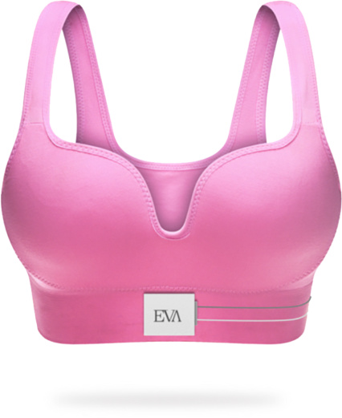

About my Future
Future is always uncertain, meaning that all of what we think about the future are just ideas or plans. But that doesn't mean we shouldn't work hard to achieve
them, it's just a warning to don't get dissapointed if things don't go as planned.
-
Google Intership
 One of the most desirable company to work for my generation is Google, and I'm not an exception to that rule, I would love to be in an intership at one of their
North America Headquarters.
One of the most desirable company to work for my generation is Google, and I'm not an exception to that rule, I would love to be in an intership at one of their
North America Headquarters.
-
Higia Technologies

This is a biomedical mexican company which is developing a wearable that is able to detect breast cancer and for which I am the main AI Developer. I would love to stay
in this company as long as possible so I can help many women around the world to have a less painful and scary experience with breast canver by achieving an accurate and
early detection.